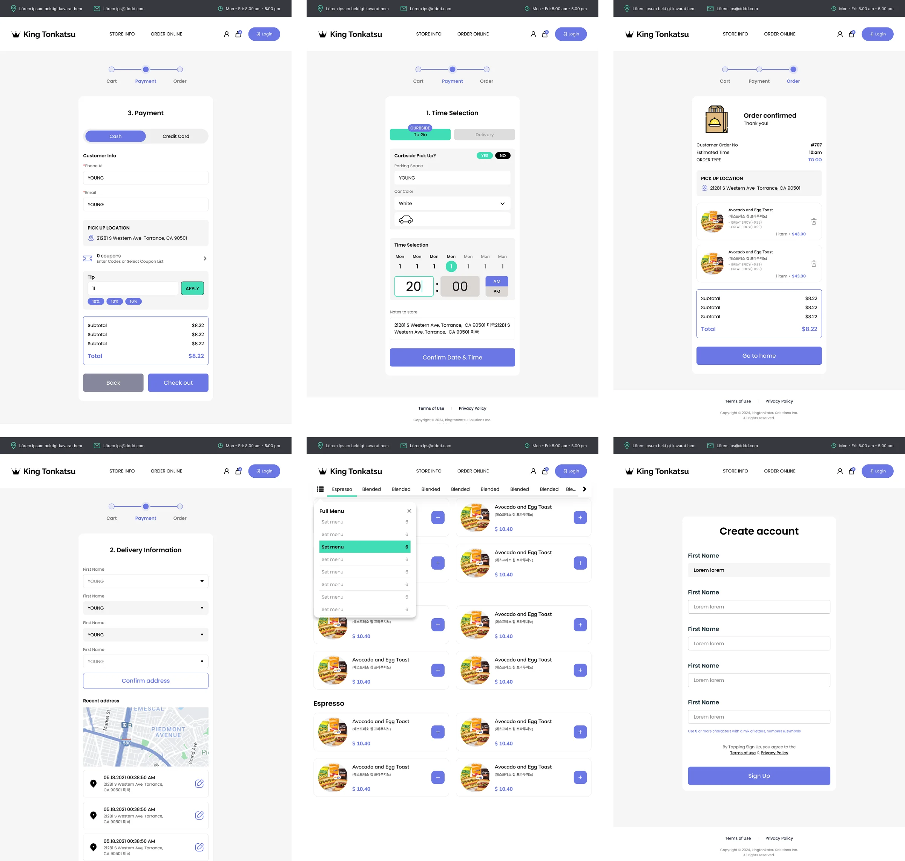
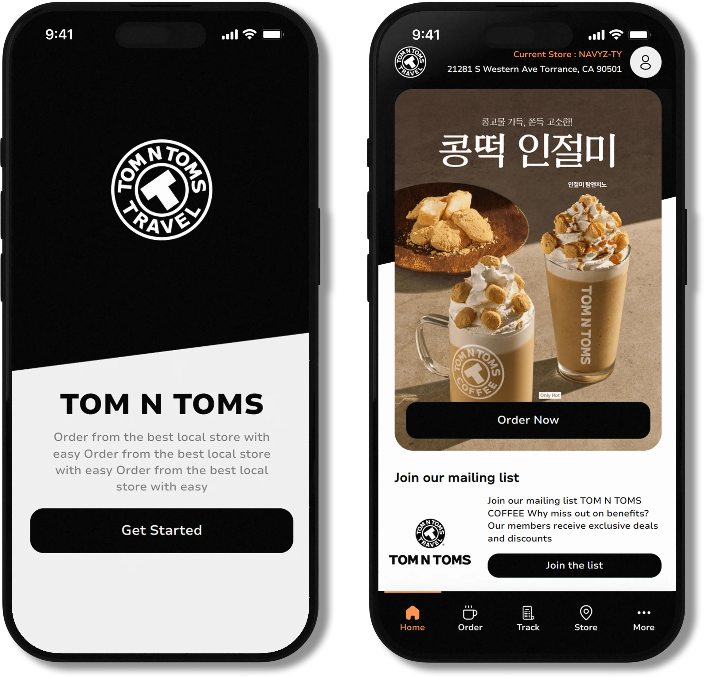
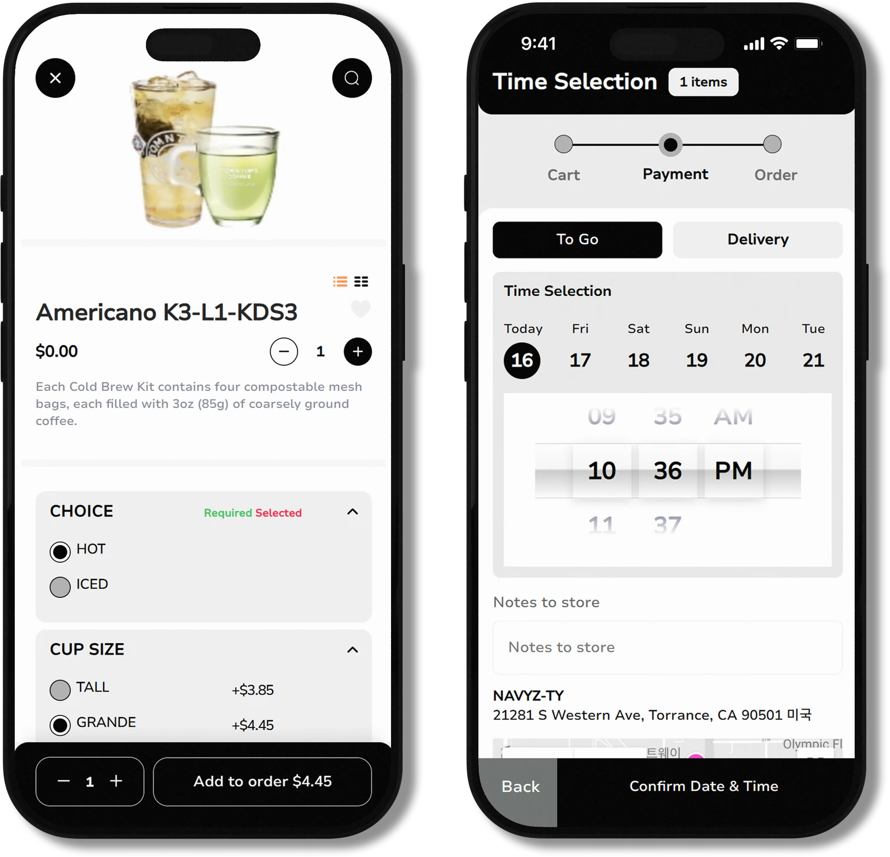
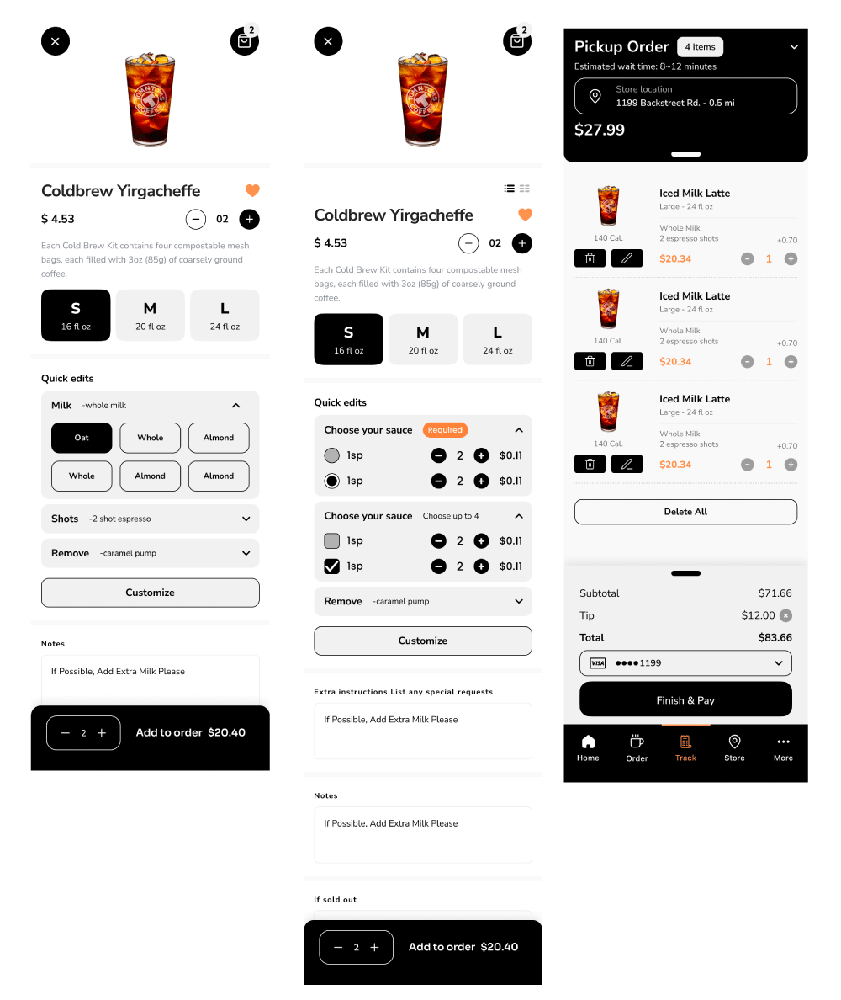
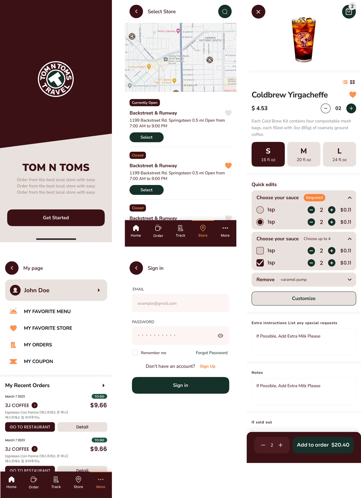

Overview
가맹 브랜드가 자기 주소로 운영하는 독립형 주문 사이트. 브랜드는 달라도 주문 흐름은 같아야 해서, 하나의 템플릿을 여러 곳에 배포하는 구조입니다.
My Role
기본 템플릿과 브랜드별 배포본의 퍼블리싱을 담당했습니다. 데스크톱과 모바일 두 화면을 함께 작업했습니다.
Build
메인 · 메뉴 목록 · 메뉴 상세 · 장바구니 · 주문 확인 · 로그인 · 회원가입 · 마이페이지(주문내역 · 쿠폰 · 즐겨찾는 메뉴 · 정보수정). 데스크톱과 모바일 두 화면으로 각각.
Stack
- HTML
- CSS
- jQuery
- Swiper
01 — 기본 템플릿

02 — 독립형 웹 앱




03 — 브랜드별 화면
메인 배너 슬라이더
상품 목록 슬라이더
목록 스크롤
브랜드별 색상 교체
데스크톱 · 모바일 반응형
코딩
디자인 협업